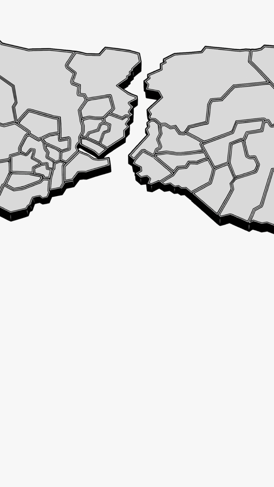

istanbulite.net
Istanbul's community platform
Giriş Yap
Giriş
Hesabın yok mu?
Kayıt Ol
Kayıt Ol
Hangi ilçede yaşıyorsun?
— İlçe seçin —
İstanbul doğumlu musun?
Evet
Hayır
Hangi ilçede doğdun?
— İlçe seçin —
Kayıt Ol
Zaten hesabın var mı?
Giriş Yap
Kütüphane
Hane
Kahvehane

İstanbul
Petek